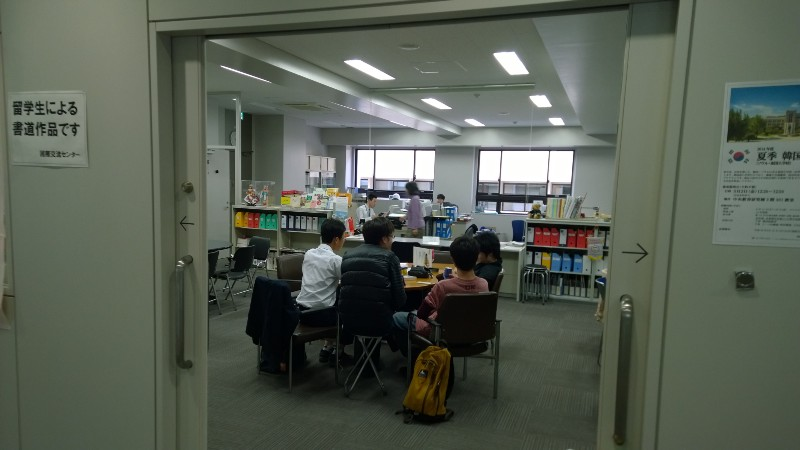

Orientation and classes
Now that I’ve finally chosen my courses …
I’ve now had over two weeks of classes so I figured it’s past time I let you know what I’m doing. Orientation and lectures aren’t exactly the most interesting things that have happened here (which is why I’ve put off writing about it for so long) but anyway, here goes.
Orientation was fun — most of the pictures I’ve posted of the university came from the tour my buddies gave me. I have three buddies, all girls (apparently Japanese guys are too shy to apply …) who have been incredibly helpful in doing all the administrative stuff that new residents+students have to do. The main purpose of the orientation day was to meet them, but there was also a massive amount of paperwork to be completed, with exciting titles like “Course Registration Form” and “New Student’s Details Form”. I had to duplicate my name, date of birth and contact information on every form, despite having provided them to the university in September last year. I handed back the last piece of paper a few days ago, which is a big relief.
In terms of classes, I’m focusing on Japanese (naturally) by taking three Japanese language courses and one about grammar (for Japanese students, taught in Japanese). Aside from that, I’m taking a German course and one on the history of war. The latter is taught in English so it’s nice and easy — although I wasn’t planning to take anything like that, it proved too hard to find Japanese-taught courses (aside from language ones) that I could actually understand.
I’m not sure if it’s the same at other universities in Japan, but the courses at Gakushuin seem to involve a much lighter workload than those at New Zealand universities. Each course has only one 90-minute lecture per week and no tutorials, so unless we start getting a lot more homework in the near future I shouldn’t have a particularly stressful year. In fact, I’ve found out that most people are taking around 15 courses so it seems odd that I can take less than half as many and still get a full year’s credit at Victoria …
The Centre for International Exchange is a great place to hang out between lectures, for both exchange students and Japanese students
There’s not much I can say about the teaching style, it seems to be the same at universities everywhere. Whiteboard/projector/blackboard + teacher + students: the time-honoured formula which is supposed to = learning. I am slightly disappointed by the lack of teaching technology (I was hoping for sentient robots, but I have yet to see even a smartboard!) but it is interesting how precise and ordered the teaching is here; I haven’t seen a teacher make a point using fewer than three colours of pen.
Weird things
- I’m the only person in two out of three of my Japanese classes — Gakushuin only has about 15 exchange students, and it turns out that most of them are better at the language than me. Still, I certainly don’t mind having 3 hours of private tuition per week
- Not exactly weird—and not really unexpected either — but almost all the white people are in the intermediate class while the advanced class is mostly Korean and Chinese students. One day I’ll be at that level … I hope!
- Apparently exams here are usually multiple-choice — to me that seems far too easy for a university-level education, but I won’t argue
And one final thing (something which I think all universities should learn from): Gakushuin’s buildings are clearly and intuitively named. And they all have obvious signs with that name. There’s the Central building in the middle, then the building immediately north is called North 1 and north of that is North 2. East of the centre is East 1 and, well, you get the idea. It’s made finding classes a whole lot easier than it was at Victoria last year (no more trying desperately to figure out what “VZ” stands for, then looking all over the map for the “Von Zedlitz” building …)